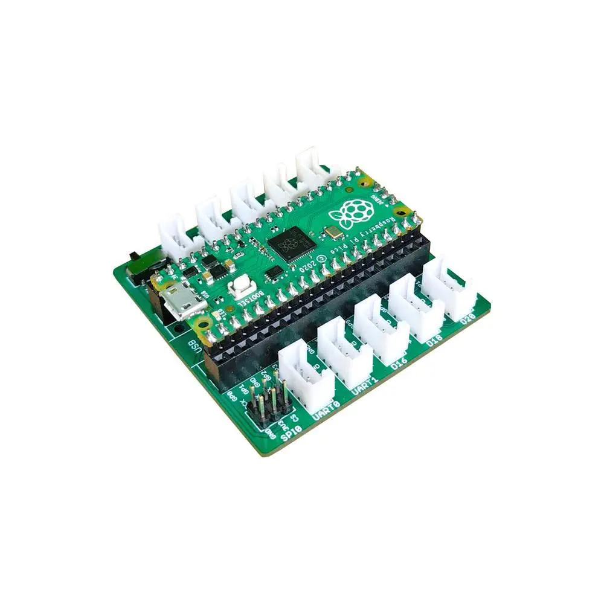
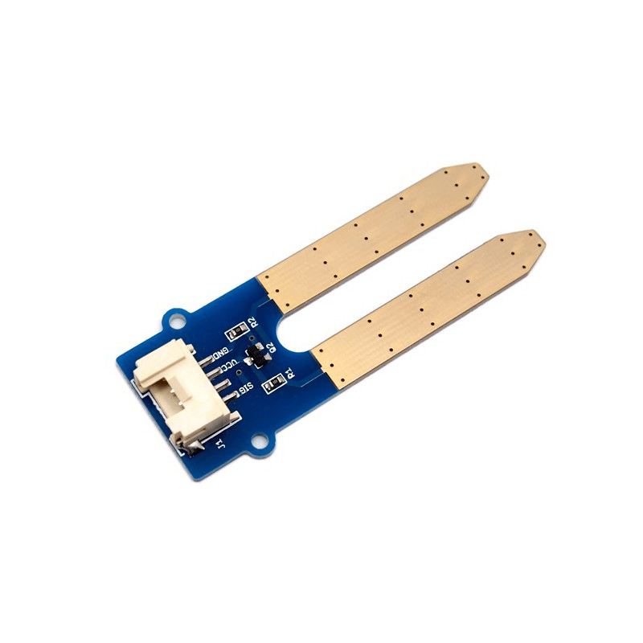
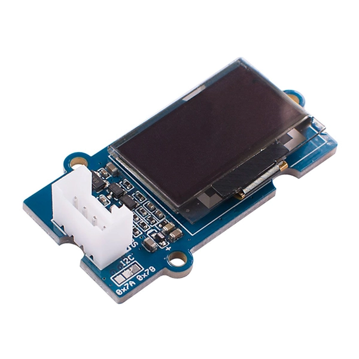
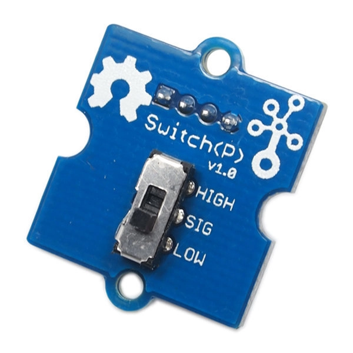
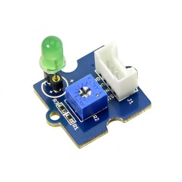
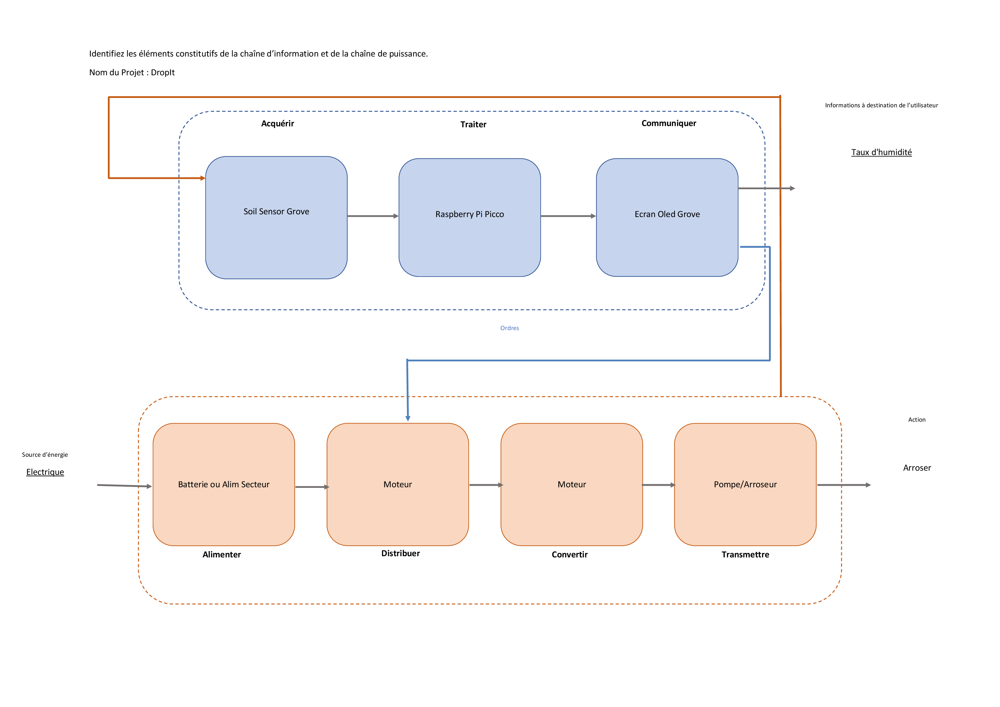
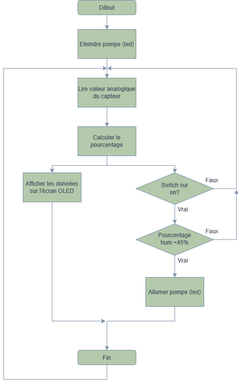

- Introduction
- Composants
- Problème et solution
- Chaîne d'information & d'énergie
- Organigramme
- Simulation Interactive
- Le Code
- Possible Upgrade
- Conclusion

Le cerveau du système qui traite les données

Mesure l'humidité du sol

Interface visuelle pour lire les données

Contrôle manuel pour activer le système d'arrosage

Représente visuellement l'activation de la pompe


Interrupteur
Système Désactivé
Humidité du sol
55%Écran OLED
État de la LED
Pompe à l'arrêt
Créer une application (pour afficher le pourcentage sans regarder l'écran) avec un backend Python (flask) et un frontend en React. Faire communiquer le système et l'appli avec une Rest API (fastAPI)
Pour conclure, le sytème est capable de détecter si la plante/sol a besoin d'être arrosée ou non. Et affiche le pourcentage d'humidité sur un écran